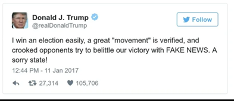
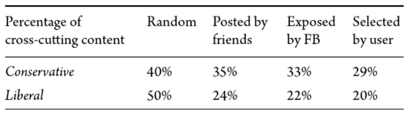

The butterfly and domino effect with easily shared information. Privacy issue.
Once something is on the internet, it could be there forever. Even if you deleted your post someone could have screenshotted it and it is now out of your control. This has a domino effect as this information can then be shared with others. Although this can be used to hold people accountable for their actions, it also sacrifices privacy and may result in unjust criticism. Posts taken out of context, or posts from the past during a vulnerable time of a person's life may not reflect who they are now. Posts that do not make a person look evil but are still embarrassing can also be leaked or used against them.
Fake news, filter bubbles, echo chambers.
Fake news is known as information that is simply not true. It’s very common in politics, you may have heard the phrase being said from Donald Trump a lot.

It’s common for people to try and take down opposing politicians using blatant lies or misguided, out of context or exaggerated information. The phrase can also be used to demote true information by just saying “fake news” alone. Fake news takes a different form to just false information on the internet. You could even argue the term fake news came from the internet. Three MIT scholars, studied popular online social media platform Twitter, and discovered that fake news spreads faster on the internet than true stories. This was because people were 70% more likely to retweet false news than true stories. This also has an exponential affect meaning that true stories usually take about 6 times as long to reach 1,500 people than false ones.

This table shows percentages of cross cutting content (liberal leaning stories for conservatives and conservative leaning stories for liberal) via 4 different methods on Facebook. As you can see, conservatives are mostly exposed to stories/opinions that lean with what they agree with, and liberals are mostly exposed with stories/opinions that lean with what they agree with. This is an example of echo chambers. People are trapped in FB groups that act as echo chambers, keeping differing stories and opinions out. FBs algorithms make this worst by acting as filter bubbles. Showing you what it thinks you want to see, only exposing you to differing stories and opinions around 33% to 22% of the time, when it should be close to 50%.
Data collection for tailored candidate promotion. Risk due to exploitation and deceitful manipulation.
Collecting an internet users' data through things like cookies in order for politicians to present themselves as something they are not a breach of privacy (when used without your knowledge) and a form of manipulation. It is an opportunity for politicians but a risk for the rest of us. When using the internet, we risk being deceived, and tricked into voting for someone we don’t agree with because of this data collection and tailored ads. Here is a quote from govetech.com that talk about7 how people information could be exploited. “The spreadsheet from a Washington, D.C.-based political data firm called Aristotle purported to describe where those voters stand on gay rights, gun rights and animal rights; what type of job and level of earnings they have; which magazines and religions they subscribe to; whether they have kids, own homes, do their own remodelling, garden or fish.” So, in this example, how could politicians use this information? Let us say a politician obtained this information from thousands of people using cookies and used algorithms to sort them and present them individualised ads. So that the people who supported gay rights did not hear about the politician's opposition against them but the people who did not support gay rights did. Then the people who liked guns were told this politician did too, the people who love animals were told that this politician does too and vice versa. Business owners who made a lot of money were promised less taxes, but employees who did not make much money were promised increased minimum wages and so on.
Citizen mobilization. Risk when used irresponsibly.
Online citizen mobilization can also be used for bad or threaten the established political order so much that there is violence and/or government overturn. The women’s march is also an example of citizen mobilization that threatened Donald Trump's position and 2020s BLM protests were a mixture of both peaceful and violent. Most protestors had good intentions but regardless of your standing, you cannot deny the violence that was displayed, the property damaged, and the stores looted. Another example is the 2021 raid against the White House after Donald Trump failed to become president for another four years. Many of his followers used social media to orchestrate this less civil protest.
The page or area describing the risks posed by your chosen technology/topic.
Made 1 March 2021